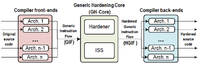

Felipe Restrepo Calle
Felipe Restrepo Calle
Profesor Asociado
Coordinador - Maestría en Ingeniería de Sistemas y Computación
Departamento de Ingeniería de Sistemas e Industrial
Universidad Nacional de Colombia
Bogotá D.C., Colombia
Oficina: 114 Edificio 453 (Aulas de Ingeniería)
Teléfono: +57 1 316 5000 ext. 14077/14011
Correo: feres...@unal.edu.co
Coordinador - Maestría en Ingeniería de Sistemas y Computación
Departamento de Ingeniería de Sistemas e Industrial
Universidad Nacional de Colombia
Bogotá D.C., Colombia
Oficina: 114 Edificio 453 (Aulas de Ingeniería)
Teléfono: +57 1 316 5000 ext. 14077/14011
Correo: feres...@unal.edu.co
Investigación
Grupo de investigación: Programming Languages and Systems - PLaS
Áreas de interés
- Educación en ingeniería y programación de computadores.
- Tolerancia a fallos, confiabilidad, técnicas y herramientas para el diseño de sistemas embebidos confiables, computación aproximada.
- Lenguajes de programación, análisis automático de código fuente, procesadores de lenguaje.
Listado de publicaciones
Proyectos más importantes
UNCode |
Paradigmas de programación
|
| UNCode: Sistema interactivo para el aprendizaje y la evaluación automática de habilidades de programación de computadores.
Más info - Repositorio. |
Sitio web educativo para la introducción a los paradigmas de programación y tutoriales de distintos lenguajes. |
IRIS
|
Software Hardening Environment - SHE |
| Herramienta de accesibilidad para que los estudiantes en situación de discapacidad visual puedan percibir imágenes usando las manos. |
Herramienta para el "endurecimiento" automático de código fuente para el diseño de sistemas embebidos confiables. |
Ver más proyectos.
Docencia
| Curso de Introducción a la programación con Python.
MOOC virtual gratuito (en línea). |
Introducción a la programación con Python |
Asignaturas de este semestre
- 2023-2 Lenguajes de programación (pregrado)
- 2023-2 Seminario de ingestigación/profundización II (maestría)
- 2023-2 Análisis y visualización de datos con Python (educación continua)
- 2023-2 Procesamiento y entendimiento de lenguaje natural - NLP (educación continua)
Ver todas las asignaturas.